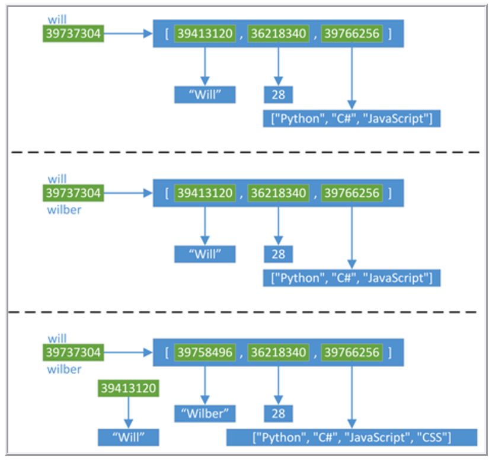

Python wiki
Table of Contents
- 1. 序列
- 2. 字典
- 3. 对象赋值：
- 4. 列表解析式
- 5. 生成器表达式
- 6. 包和搜索路径
- 7. pycharm快捷键
- 8. help
- 9. pdb的一种特殊用法
- 10. 一个难搞的bug
- 11. json的使用
- 12. 编程规范
- 13. use gnu global for python
- 14. 使用setuptools作egg包
- 15. staticmethod和classmethod的区别
- 16. TODO compile exec eval
- 17. 调用外部程序
- 18. float保留小数点后两位
- 19. pip和easy_install的区别
- 20. sort
- 21. 哈希算法（摘要算法）
- 22. struct
- 23. 得到当前执行文件的绝对路径
- 24. base64和random
- 25. pip 相关
- 26. print打印字典的特殊用法
- 27. 设置源文件编码
- 28. python多继承的查找顺序
- 29. 使用dis模块来查看python字节码
- 30. tornado
- 31. vobject可以操作vCards文件
- 32. python解析html
1 序列
元组中的元素是不可对其赋值的。
a = (1,2,3) print(a)
列表中的元素可以被赋值。
a = [ 1,2,3 ] print(a)
2 字典
使用dict和copy.copy来从已存在的字典里复制内容来生成新字典，新字典是 浅拷贝版本。
字典是hash。
tel = {'jack': 4098, 'sape': 4139} print(tel['jack'])
字典的keys默认是无序的，所以如果对顺序有要求，遍历字典的时候最好先排
序一下， python 2.4 后可以使用 sorted 函数来搞定：
a = dict(x=1,y=3) print a for i in sorted(a): print '%s is %s' % (i, a[i])
3 对象赋值：
will = ["Will", 28, ["Python", "C#", "JavaScript"]] wilber = will print id(will) print will print [id(ele) for ele in will] print id(wilber) print wilber print [id(ele) for ele in wilber] print '' will[0] = "Wilber" will[2].append("CSS") print id(will) print will print [id(ele) for ele in will] print id(wilber) print wilber print [id(ele) for ele in wilber]

4 列表解析式
其实就是一个把一个lambda表达式map到列表中的每个元素。
print map(lambda x: x ** 2, range(6)) print [x ** 2 for x in range(6)]
加上if也就是加了一个过滤器：
print filter(lambda x: x % 2, range(10)) print [x for x in range(10) if x % 2]
5 生成器表达式
和列表表达式差不多，只不过通过延迟计算，可以更加省内存，下面这段代码
会把 /etc/hosts 全部读入内存：
f = open('/etc/hosts') allLineLens = [len(x) for x in f] f.close() print max(allLineLens)
改成生成器表达式能优化：
f = open('/etc/hosts') longest = max(len(x) for x in f) f.close() print longest
6 包和搜索路径
python有自己的默认的一些搜索路径。shell中的搜索路径新增可以在
PYTHONPATH 这个环境变量中加入。
export PYTHONPATH='/path':$PYTHONPATH
python代码中可以在sys.path中加入：
import sys sys.path.append('path')
如果一个目录中有名为 __init__.py 的文件，哪怕它里面什么都没有。
python都会把它当成一个包。子目录中也有该文件，则子目录就是它的子包。
如果把一个包（如rcs）的路径加入 PYTHONPATH 中后，就可以直接引用包
中的内容了：
from rcs.service.xxx import xxx
这上面，rcs为一个包，service是它的子包，xxx是service中的子包。
7 pycharm快捷键
- cmd b 跳转到声明处（cmd加鼠标）
- opt + 空格 显示符号代码 （esc退出窗口 回车进入代码）
- cmd []光标之前/后的位置
- opt + F7 find usage
- cmd backspace 删除当前行
- cmd +c 复制光标当前行,剪切同理
- cmd + f 当前文件搜索（回车下一个 shift回车上一个）
- cmd + r 当前文件替换
- shift + cmd + f 全局搜索
- shift + cmd + R 全局替换
- cmd+o 搜索class
- shift + cmd + o 搜索文件
- opt + cmd + o 搜索符号（函数等)
- cmd + l 指定行数跳转
- shift enter 在行中的时候直接到下一行
- cmd + 展开当前
- cmd - 折叠当前
- shift cmd + 展开所有
- shift cmd - 折叠所有
- cmd / 注释/取消注释一行
- opt + cmd + / 批量注释(pycharm不生效)
- ctr + tab 史上最NB的导航窗口（工程文件列表、文件结构列表、命令行模式、代码检查、VCS等，下面两个是可以被替换的）
- alt + F12 打开命令行栏
- cmd + F12 显示文件结构
- cmd j 代码智能补全
- alt + F1 定位编辑文件所在位置:
- cmd + F6 更改变量
- opt + cmd + t 指定代码被注释语句或者逻辑结构、函数包围
- Tab / Shift + Tab 缩进、不缩进当前行
- opt + cmd + l 代码块对齐
- cmd+d 在下一行复制本行的内容
8 help
python终端里面使用help函数来查询。不过首先得把对应的模块import进来。
>>> import time
>>> help(time)
emacs中可以使用 elpy-doc函数来查询。
9 pdb的一种特殊用法
通过pdb直接打断点来调试就不说了。下面这样写，程序一直运行时，通过发
送一个 SIGUSR1 信号来停住程序。只是记录一下。但是如果程序不是当前
终端拉起的，还不知道怎么可以进到pdb中去。如果是当前终端拉起的，直接
使用fg把程序调到前台来就是了。
import os import signal import sys import time def handle_pdb(sig, frame): import pdb pdb.Pdb().set_trace(frame) def loop(): while True: x = 'foo' time.sleep(0.2) if __name__ == '__main__': signal.signal(signal.SIGUSR1, handle_pdb) print(os.getpid()) loop()
10 一个难搞的bug
错误的写法，最后 collection 中的内容全是一样的：
a = range(10) collection = [] temp = {} for i in a: temp['site'] = i collection.append(temp) print collection
正确的写法：
a = range(10) collection = [] for i in a: temp = {} temp['site'] = i collection.append(temp) print collection
11 json的使用
具体有两个函数： json.loads 和 json.dumps 。
json_string = '{"first_name": "Guido", "last_name":"Rossum"}' import json parsed_json = json.loads(json_string) print(parsed_json['first_name']) d = { 'first_name': 'Guido', 'second_name': 'Rossum', 'titles': ['BDFL', 'Developer'], } print(json.dumps(d)) print(type(json.dumps(d)))
12 编程规范
12.1 函数注释
def fetch_bigtable_rows(big_table, keys, other_silly_variable=None): """Fetches rows from a Bigtable. Retrieves rows pertaining to the given keys from the Table instance represented by big_table. Silly things may happen if other_silly_variable is not None. Args: big_table: An open Bigtable Table instance. keys: A sequence of strings representing the key of each table row to fetch. other_silly_variable: Another optional variable, that has a much longer name than the other args, and which does nothing. Returns: A dict mapping keys to the corresponding table row data fetched. Each row is represented as a tuple of strings. For example: {'Serak': ('Rigel VII', 'Preparer'), 'Zim': ('Irk', 'Invader'), 'Lrrr': ('Omicron Persei 8', 'Emperor')} If a key from the keys argument is missing from the dictionary, then that row was not found in the table. Raises: IOError: An error occurred accessing the bigtable.Table object. """ pass
12.2 类注释
class SampleClass(object): """Summary of class here. Longer class information.... Longer class information.... Attributes: likes_spam: A boolean indicating if we like SPAM or not. eggs: An integer count of the eggs we have laid. """ def __init__(self, likes_spam=False): """Inits SampleClass with blah.""" self.likes_spam = likes_spam self.eggs = 0 def public_method(self): """Performs operation blah."""
12.3 命名规范
module_name, package_name, ClassName, method_name, ExceptionName,
function_name, GLOBAL_VAR_NAME, instance_var_name,
function_parameter_name, local_var_name.
命名约定
所谓”内部(Internal)”表示仅模块内可用, 或者, 在类内是保护或私有的. 用
单下划线(_)开头表示模块变量或函数是protected的(使用import * from时不会
包含). 用双下划线(__)开头的实例变量或方法表示类内私有. 将相关的类和顶
级函数放在同一个模块里. 不像Java, 没必要限制一个类一个模块. 对类名使用
大写字母开头的单词(如CapWords, 即Pascal风格), 但是模块名应该用小写加下
划线的方式(如lower_with_under.py). 尽管已经有很多现存的模块使用类似于
CapWords.py这样的命名, 但现在已经不鼓励这样做, 因为如果模块名碰巧和类
名一致, 这会让人困扰.
Python之父Guido推荐的规范:
| Modules | lower_with_under | _lower_with_under |
| Packages | lower_with_under | |
| Classes | CapWords | _CapWords |
| Exceptions | CapWords | |
| Functions | lower_with_under() | _lower_with_under() |
| Global/Class Constants | CAPS_WITH_UNDER | _CAPS_WITH_UNDER |
| Global/Class Variables | lower_with_under | _lower_with_under |
| Instance Variables | lower_with_under | _lower_with_under (protected) or __lower_with_under (private) |
| Method Names | lower_with_under() | _lower_with_under() (protected) or __lower_with_under() (private) |
| Function/Method Parameters | lower_with_under | |
| Local Variables | lower_with_under |
13 use gnu global for python
as official doc says:
supports 6 languages by built-in parser. (definition and reference) C,
C++, Yacc, Java, PHP4 and assembly.
supports 25 languages by Pygments + Universal Ctags plug-in
parser. (definition and reference) Awk, Dos batch, COBOL, C, C++, C#,
Erlang, Fortran, Java, JavaScript, Lisp, Lua, Pascal, Perl, PHP,
Python, Ruby, Matlab, OCaml, Scheme, Tcl, TeX, Verilog, Vhdl and Vim.
To use the parser, please see the file
'plugin-factory/PLUGIN_HOWTO.pygments' in the package.
___________________________________
| | | | | _ | | |
| |___| | | | | _| | | | GNU GLOBAL source code tag system
| | | | | | | | | |
| ~~ | ~~| | ~ | | | ~~| for all hackers.
~~~~~~~~~~~~~~~~~~~~~~~~~~~~~~~~~~~~~~
Copyright (c) 2014 Tama Communications Corporation
This file is free software; as a special exception the author gives
unlimited permission to copy and/or distribute it, with or without
modifications, as long as this notice is preserved.
This program is distributed in the hope that it will be useful, but
WITHOUT ANY WARRANTY, to the extent permitted by law; without even the
implied warranty of MERCHANTABILITY or FITNESS FOR A PARTICULAR PURPOSE.
----------------------------------
How to use Pygments Plug-in Parser
Pygments is a generic syntax highlighter for wide variety of
programming languages. This plug-in use Pygments and Exuberant
Ctags as a parser to treat both definitions and references.
You need the following software:
o Python 2.6 or later (3 is also supported)
o Pygments python package 1.6 or later
o Exuberant Ctags 5.5 or later (optional)
[Installation]
1. Check
Make sure python and ctags can be invoked in your command line.
$ type python
python is /usr/bin/python
$ type ctags
ctags is /usr/local/bin/ctags
2. Installation of GLOBAL
$ ./configure
$ make
$ sudo make install
3. Setup of Pygments plug-in parser
The definition of Pygments plug-in parser is prepared
in the default configuration file. Please specify it.
$ export GTAGSCONF=/usr/local/share/gtags/gtags.conf
$ export GTAGSLABEL=pygments
[Execution of gtags]
Please execute gtags(1) as usual.
$ gtags
If it is doubtful whether Pygments plug-in parser is used,
please try --explain option. It shows the libraries used by
gtags.
$ gtags --explain
...
File './lib/xmalloc.c' is handled as follows:
suffix: |.c|
language: |C|
parser: |parser|
library: |/usr/local/lib/gtags/pygments-parser.la|
----------------------------------
Pygments plug-in parser was written by Yoshitaro MAKISE.
For detals, please see the following site:
[https://github.com/yoshizow/global-pygments-plugin]
Though it is considered a separate package, not part of GLOBAL proper,
we included it for user's convenience.
I think use the two `export' command is ok.
但是这个我尝试了一下，效果还是不太好。还是使用`cscope'。
14 使用setuptools作egg包
mkdir demo
cd demo/
ls
f setup.py
python setup.py bdist_egg
这个可以在dist目录中做出来一个egg包。然后使用 python setup.py
install 可以直接安装这个包。
setup.py里面可以是这样的：
from setuptools import setup, find_packages setup( name = "demo", version = "0.1", packages = find_packages(), )
15 staticmethod和classmethod的区别
@staticmethod不需要表示自身对象的self和自身类的cls参数，就跟使 用函数一样。@classmethod也不需要self参数，但第一个参数需要是表示自身类的cls 参数。
如果在@staticmethod中要调用到这个类的一些属性方法，只能直接类名.属性
名或类名.方法名。而@classmethod因为持有cls参数，可以来调用类的属性，
类的方法，实例化对象等，避免硬编码。下面上代码。可以看到，
@classmethod 的cls可以是其它任何值，但这里它其实就是指类型A。
class A(object): bar = 1 def foo(self): print 'foo' @staticmethod def static_foo(): print 'static_foo' print A.bar @classmethod def class_foo(cls): print 'class_foo' print cls.bar cls().foo() @classmethod def class_foo_2(clsa): print 'class_foo 2' print clsa.bar clsa().foo() A.static_foo() A.class_foo() A.class_foo_2()
16 TODO compile exec eval
compile可以把一段代码搞成一个可以执行的对象。
compile(source, filename, mode[, flags[, dont_inherit]])¶ source是
指需要执行的代码。这中间的filename我没搞懂是干啥的。flags可以是
exec single 和 eval 中的任一个。
我还没有搞懂：
[ ]eval, exec和single的区别
The mode argument specifies what kind of code must be compiled;
it can be 'exec' if source consists of a sequence of statements,
'eval' if it consists of a single expression, or 'single' if it
consists of a single interactive statement (in the latter case,
expression statements that evaluate to something other than None
will be printed).
下面是例子：
a = compile('print 3', '', 'exec') exec(a) a = compile('print 3 * 3', '', 'exec') exec(a)
execfile可以执行一个文件。假如 /tmp/test.py 是这样的：
class A(object): bar = 1 def foo(self): print 'foo' @staticmethod def static_foo(): print 'static_foo' print A.bar @classmethod def class_foo(cls): print 'class_foo' print cls.bar cls().foo() @classmethod def class_foo_2(clsa): print 'class_foo 2' print clsa.bar clsa().foo() A.static_foo() A.class_foo() A.class_foo_2() print 'end' x = 'xiepeng'
execfile('/tmp/test.py')
也可以使把源文件读出来，然后使用compile编一下，再执行：
with open('/tmp/test.py') as fn: a = fn.read() c = compile(a, '', 'exec') exec(c)
17 调用外部程序
使用 subprocess ：
Examples:
>>> subprocess.call(["ls", "-l"])
0
>>> subprocess.call("exit 1", shell=True)
1
shell=True 的时候会把程序结果弄出来。比如：
import subprocess subprocess.call('ls /tmp/', shell=True)
注意 ： !shell=True! 可能会存在安全问题。 但是使用 !shell=False! ，第一个参数就不能再是string了。需要是一个list。
import subprocess subprocess.call(['ls', '/tmp'], shell=False)
一般是配合 shlex 来使用：
import shlex import subprocess cmd = "ls /tmp/" print shlex.split(cmd) subprocess.call(shlex.split(cmd), shell=False)
17.1 Popen
Warning
This will deadlock when using stdout=PIPE and/or stderr=PIPE and
the child process generates enough output to a pipe such that it
blocks waiting for the OS pipe buffer to accept more data. Use
communicate() to avoid that.
比如这样可能就要锁死：
import subprocess s = subprocess.Popen(["ps", "aux"], stdout=subprocess.PIPE) s.wait()
需要使用 comunicate 来等待就可以：
import subprocess i = 0 # s = subprocess.Popen(["ps", "aux"], stdout=subprocess.PIPE) s = subprocess.Popen(['date'], stdout=subprocess.PIPE) print 'begin' result = s.communicate() print s.returncode for line in result[0].split('\n'): print i, line i = i + 1
Popen.communicate(input=None)¶
Interact with process: Send data to stdin. Read data from stdout
and stderr, until end-of-file is reached. Wait for process to
terminate. The optional input argument should be a string to be
sent to the child process, or None, if no data should be sent to
the child.
communicate() returns a tuple (stdoutdata, stderrdata).
Note that if you want to send data to the process’s stdin, you
need to create the Popen object with stdin=PIPE. Similarly, to
get anything other than None in the result tuple, you need to
give stdout=PIPE and/or stderr=PIPE too.
Note
The data read is buffered in memory, so do not use this method if
the data size is large or unlimited.
18 float保留小数点后两位
s = '17.23532' a = ("%.2f GB" % float(s)) print a print type(a)
19 pip和easy_install的区别
easy_install 是在2004发布的，做为python的包管理器，能自动从 PyPi
安装包，自动解决依赖。
pip 于2008年发布。目的是做为 easy_install 的替代品。它不再从egg
文件中安装包。而是简单地将软件包从sdist中搞出来。
下面列出一些这两者之间重要的区别：
| pip | easy_install | |
|---|---|---|
| Installs from Wheels | Yes | No |
| Uninstall Packages | Yes (pip uninstall) | No |
| Dependency Overrides | Yes (Requirements Files) | No |
| List Installed Packages | Yes (pip list and pip freeze) | No |
| PEP 438 Support Yes | No | |
| Installation format | ‘Flat’ packages with egg-info metadata. | Encapsulated Egg format |
| sys.path modification | No | Yes |
| Installs from Eggs | No | Yes |
| pylauncher support | No | Yes |
| Multi-version Installs | No | Yes |
| Exclude scripts during install | No | Yes |
| per project index | Only in virtualenv | Yes, via setup.cfg |
20 sort
>>> sorted([5, 2, 3, 1, 4])
[1, 2, 3, 4, 5]
list.sort() will change the list:
>>> a = [5, 2, 3, 1, 4]
>>> a.sort()
>>> a
[1, 2, 3, 4, 5]
list.sort() is defined for list only. sorted functiona accept any
iterable:
>>> sorted({1: 'D', 2: 'B', 3: 'B', 4: 'E', 5: 'A'})
[1, 2, 3, 4, 5]
>>> sorted("This is a test string from Andrew".split(), key=str.lower)
['a', 'Andrew', 'from', 'is', 'string', 'test', 'This']
more complicated:
>>> student_tuples = [
... ('john', 'A', 15),
... ('jane', 'B', 12),
... ('dave', 'B', 10),
... ]
>>> sorted(student_tuples, key=lambda student: student[2]) # sort by age
[('dave', 'B', 10), ('jane', 'B', 12), ('john', 'A', 15)]
>>> class Student:
... def __init__(self, name, grade, age):
... self.name = name
... self.grade = grade
... self.age = age
... def __repr__(self):
... return repr((self.name, self.grade, self.age))
>>> student_objects = [
... Student('john', 'A', 15),
... Student('jane', 'B', 12),
... Student('dave', 'B', 10),
... ]
>>> sorted(student_objects, key=lambda student: student.age) # sort by age
[('dave', 'B', 10), ('jane', 'B', 12), ('john', 'A', 15)]
还可以通过加 reverse 参数来反向排序。
class person(object): """Documentation for person """ def __init__(self, name, age): super(person, self).__init__() self.age = age self.name = name a = person('xie', 2) b = person('peng', 8) c = person('ni', 4) d = person('hao', 3) l = [a, b, c, d] print [x.name for x in l] print [x.name for x in sorted(l, key=lambda x: x.age)] print [x.name for x in sorted(l, key=lambda x: x.age, reverse=True)]
21 哈希算法（摘要算法）
常见的有md5和sha1等。就是一个函数f()，它通过一个函数，把任意长度的数 据转换为一个长度固定的数据串（通常用16进制的字符串表示）。单向的，计 算f(data)很容易，但通过digest反推data却非常困难。
比SHA1更安全的算法是SHA256和SHA512，不过越安全的算法越慢，而且摘要长 度更长。
有没有可能两个不同的数据通过某个摘要算法得到了相同的摘要？完全有可能， 因为任何摘要算法都是把无限多的数据集合映射到一个有限的集合中。这种情 况称为碰撞，比如Bob试图根据你的摘要反推出一篇文章'how to learn hashlib in python - by Bob'，并且这篇文章的摘要恰好和你的文章完全一 致，这种情况也并非不可能出现，但是非常非常困难。
在后端数据库中，一般不存用户的明文密码，这样可能系统管理员能看到所有 的密码。而是存它的密码的摘要，也就是hash之后的值。用户登陆时，过程应 该是先计算它的密码的摘要，然后对比库中的。这样的好处是即使运维人员能 访问数据库，也无法获知用户的明文口令。
22 struct
廖雪峰的博客写得很详细 我直接引用了。
准确地讲，Python没有专门处理字节的数据类型。但由于str既是字符串，又
可以表示字节，所以，字节数组＝str。而在C语言中，我们可以很方便地用
struct、union来处理字节，以及字节和int，float的转换。
在Python中，比方说要把一个32位无符号整数变成字节，也就是4个长度的str，
你得配合位运算符这么写：
>>> n = 10240099
>>> b1 = chr((n & 0xff000000) >> 24)
>>> b2 = chr((n & 0xff0000) >> 16)
>>> b3 = chr((n & 0xff00) >> 8)
>>> b4 = chr(n & 0xff)
>>> s = b1 + b2 + b3 + b4
>>> s
'\x00\x9c@c'
非常麻烦。如果换成浮点数就无能为力了。
好在Python提供了一个struct模块来解决str和其他二进制数据类型的转换。
struct的pack函数把任意数据类型变成字符串：
>>> import struct
>>> struct.pack('>I', 10240099)
'\x00\x9c@c'
23 得到当前执行文件的绝对路径
有时候需要根据当前执行文件的路径和相对路径来找文件。首先需要得到可执 行文件的绝对路径：
import os print os.path.abspath(os.path.dirname(__file__)) absolute_path = os.path.abspath(os.path.dirname(__file__)) other_path = os.path.join(os.path.abspath(os.path.dirname(__file__)), "../xiepeng") print other_path
24 base64和random
import base64 from Crypto import Random print base64.b64encode(Random.new().read(24)) print len(base64.b64encode(Random.new().read(24)))
25 pip 相关
25.1 wheel是个什么东西
wheel其实是一种内置的归档格式。它比起从源代码编译再安装快很多。pip一
般是优先安装的wheel。使用 --no-binary 可以禁止从wheel安装。如果没
有找到对应的wheel，pip才会选择从源代码安装。
25.2 pip install后不使用cache安装
这里 提的一个问题：pip安装一个版本的包，发现版本安装错了，使用 pip
uninstall 删除后重新安装，发现还是安装原来错误版本的包。原来pip默认
cache了。
要强制不从 cache 安装，需要这样：
If using pip 6.0 or newer, try adding the --no-cache-dir option.
If using pip older than pip 6.0, upgrade it with pip install -U pip.
各平台cahce的dir为：
Unix
~/.cache/pip and it respects the XDG_CACHE_HOME directory.
macOS
~/Library/Caches/pip.
Windows
<CSIDL_LOCAL_APPDATA>\pip\Cache
官方文档在这里 默认cache都是打开的
25.3 结合pip进行离线安装
特殊情况下，电脑不能连接外网。需要通过离线的方式安装package。
官网教程在这里 。
为了做示例，使用 virtualenv 新建一个全新的python环境。
cd /tmp/ mkdir temp virtualenv temp source temp/bin/activate which pip
需要先把对应的包全部下载下来（如果只有一个包，后面直接跟包名就可以
了。不需要 -r 选项）：
mkdir -p /tmp/downloads
pip install --download /tmp/downloads -r requirements.txt
pip install --download 会先看看 wheel cache 中有没有对应的软件，
有就用cache中的，没有才从 pypi 下载。如果之前没安装过这些包，那肯
定是没有对应的 wheel cache 的。在这种情况下，有些包在 pypi 中又
不是 wheel 的形式发布的，但是你又确实希望得到 wheel 形式的包。
可以执行下面的命令：
pip wheel --wheel-dir /tmp/downloads_wheel -r requirements.txt
注意 ： pip 9.0 提供了 pip download 命令，它默认下载到当前目
录：它可以取代 pip install --downlaod ，后者会在 pip 10 中被
remove。
下面看看这两个命令的区别， downlaods 目录中有 tar.gz ，
downloads_wheel 目录全是 wheel 包：
$ ls downloads_wheel/
appdirs-1.4.3-py2.py3-none-any.whl iso8601-0.1.11-py2.py3-none-any.whl pbr-3.1.1-py2.py3-none-any.whl requestsexceptions-1.2.0-py2.py3-none-any.whl
certifi-2017.4.17-py2.py3-none-any.whl jsonpatch-1.16-py2.py3-none-any.whl positional-1.1.1-py2.py3-none-any.whl six-1.10.0-py2.py3-none-any.whl
cffi-1.10.0-cp27-cp27mu-manylinux1_x86_64.whl jsonpointer-1.10-py2-none-any.whl pycparser-2.17-py2.py3-none-any.whl stevedore-1.23.0-py2.py3-none-any.whl
chardet-3.0.4-py2.py3-none-any.whl keystoneauth1-2.21.0-py2.py3-none-any.whl PyYAML-3.12-cp27-cp27mu-linux_x86_64.whl urllib3-1.21.1-py2.py3-none-any.whl
deprecation-1.0.1-py2-none-any.whl openstacksdk-0.9.17-py2.py3-none-any.whl rabbitmq-0.2.0-py2.py3-none-any.whl wrapt-1.10.10-cp27-cp27mu-linux_x86_64.whl
idna-2.5-py2.py3-none-any.whl os_client_config-1.27.0-py2.py3-none-any.whl requests-2.18.1-py2.py3-none-any.whl
$ ls downloads
appdirs-1.4.3-py2.py3-none-any.whl iso8601-0.1.11-py2.py3-none-any.whl pbr-3.1.1-py2.py3-none-any.whl requestsexceptions-1.2.0-py2.py3-none-any.whl
certifi-2017.4.17-py2.py3-none-any.whl jsonpatch-1.16-py2.py3-none-any.whl positional-1.1.1.tar.gz six-1.10.0-py2.py3-none-any.whl
cffi-1.10.0-cp27-cp27mu-manylinux1_x86_64.whl jsonpointer-1.10-py2-none-any.whl pycparser-2.17.tar.gz stevedore-1.23.0-py2.py3-none-any.whl
chardet-3.0.4-py2.py3-none-any.whl keystoneauth1-2.21.0-py2.py3-none-any.whl PyYAML-3.12.tar.gz urllib3-1.21.1-py2.py3-none-any.whl
deprecation-1.0.1.tar.gz openstacksdk-0.9.17-py2.py3-none-any.whl rabbitmq-0.2.0-py2.py3-none-any.whl wrapt-1.10.10.tar.gz
idna-2.5-py2.py3-none-any.whl os_client_config-1.27.0-py2.py3-none-any.whl requests-2.18.1-py2.py3-none-any.whl
其中 requiements.txt 可能长这样，也就是所有希望安装的包：
openstacksdk
rabbitmq
参考 官方文档 ， requirements.txt 可能这么写：
SomeProject
SomeProject == 1.3
SomeProject >=1.2,<.2.0
SomeProject[foo, bar]
SomeProject~=1.4.2
pip 6.0 后的版本还可以支持“环境标记”：
SomeProject ==5.4 ; python_version < '2.7'
SomeProject; sys_platform == 'win32'
完成下载后，直接加参数安装即可：
pip install --no-index --find-links=/tmp/downloads -r requirements.txt
25.4 使用阿里源
这样可以全局修改，修改 =~/.pip/pip.conf=：
[global] trusted-host = mirrors.aliyun.com index-url = http://mirrors.aliyun.com/pypi/simple
26 print打印字典的特殊用法
d = { 'xie': 'peng', 'peng': 'nihao' } print d print '%(xie)s' % d print '%(peng)s' % d
27 设置源文件编码
# -*- coding: utf-8; -*- from collections import namedtuple from enum import Enum class Species(Enum): cat = 1 dog = 2 horse = 3 aardvark = 4 butterfly = 5 owl = 6 platypus = 7 dragon = 8 unicorn = 9 # 依次类推 # 但我们并不想关心同一物种的年龄，所以我们可以使用一个别名 kitten = 1 # (译者注：幼小的猫咪) puppy = 2 # (译者注：幼小的狗狗) Animal = namedtuple('Animal', 'name age type') perry = Animal(name="Perry", age=31, type=Species.cat) drogon = Animal(name="Drogon", age=4, type=Species.dragon) tom = Animal(name="Tom", age=75, type=Species.cat) charlie = Animal(name="Charlie", age=2, type=Species.kitten) print charlie.type == tom.type print charlie.type print Species(1) print Species['cat'] print Species.cat
28 python多继承的查找顺序
(foo) P1 P2 (foo, bar)
\ /
|\- -/|
| \- -/ |
| \- -/ |
| \- -/ |
| -X- |
| -/ \- |
| -/ \- |
| -/ \- |
|/ \|
C1 C2 (bar)
\ /
\ /
\ -/
\ /
| /
\ -/
\ /
\ /
GC
新式类（广度优先）：
class P1(object): def foo(self): print 'called P1-foo()' class P2(object): def foo(self): print 'called P2-foo()' def bar(self): print 'called P2-bar()' class C1(P1, P2): pass class C2(P1, P2): def bar(self): print 'called C2-bar' class GC(C1, C2): pass gc = GC() gc.foo() gc.bar() print GC.__mro__
从新式类中的 __mro__ 属性可以知道查找顺序是怎样的。
旧式类（深度优先）：
class P1(): def foo(self): print 'called P1-foo()' class P2(): def foo(self): print 'called P2-foo()' def bar(self): print 'called P2-bar()' class C1(P1, P2): pass class C2(P1, P2): def bar(self): print 'called C2-bar' class GC(C1, C2): pass gc = GC() gc.foo() gc.bar()
旧式类中没有 __mro__ 属性。
29 使用dis模块来查看python字节码
import dis code_obj = compile('sum([1,2,3])', '', 'single') # exec(code_obj) dis.dis(code_obj)
import dis def f(): i = 0 print i dis.dis(f.func_code)
30 tornado
这是一个 tornado 的hello,world的例子。
import tornado.ioloop import tornado.web class MainHandler(tornado.web.RequestHandler): def get(self): self.write("Hello, world, this is test haha") def make_app(): return tornado.web.Application([ (r"/", MainHandler), ]) if __name__ == "__main__": app = make_app() app.listen(8888) tornado.ioloop.IOLoop.current().start()
31 vobject可以操作vCards文件
读：
import vobject card = vobject.vCard() s = open('test.vcf', 'r').read() print dir(vobject) v = vobject.readComponents( s ) for i in v: if not ('fuhuayuqi' in str(i.contents.get('n')[0].value)): print 'not fuhuayuqi contacts'
32 python解析html
取得所有的a标签：
# -*- coding: utf-8; -*- #!/usr/bin/python from bs4 import BeautifulSoup import sys import urllib2 reload(sys) sys.setdefaultencoding('utf8') html = """ <a href="http://www.baidu.com">this_is_test_1</a> <a href="http://www.baidu.com2">this_is_test_2</a> """ soup = BeautifulSoup(html, "html.parser") for i in [tag for tag in soup.find_all('a')]: url = i['href'].strip() name = i.string.strip() + ".mp3" print "download " + name + " from " + url + "..."